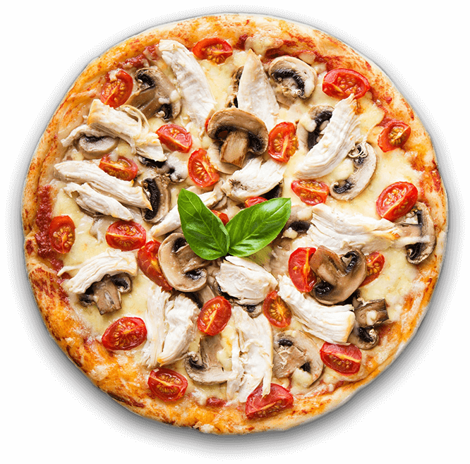

Nossa história
Localizada no coração da cidade de São João Batista - SC. A Forneria Darosci traz para você o que há de melhor em pizzas artesanais. Fundada em 2019, a forneria já é destaque na cidade e conquista novos clientes a cada dia. Nossa missão é: "Proporcionar aos nossos cliente e os que eles amam, o que há de melhor em pizza!". Contamos com profissionais experientes e antenados no mundo da gastronomia. O atendimento possui padrão de excelência e agilidade, garantindo a satisfação dos nossos clientes.
Nossa Localização
Nossa Forneria está localizada no coração da cidade.